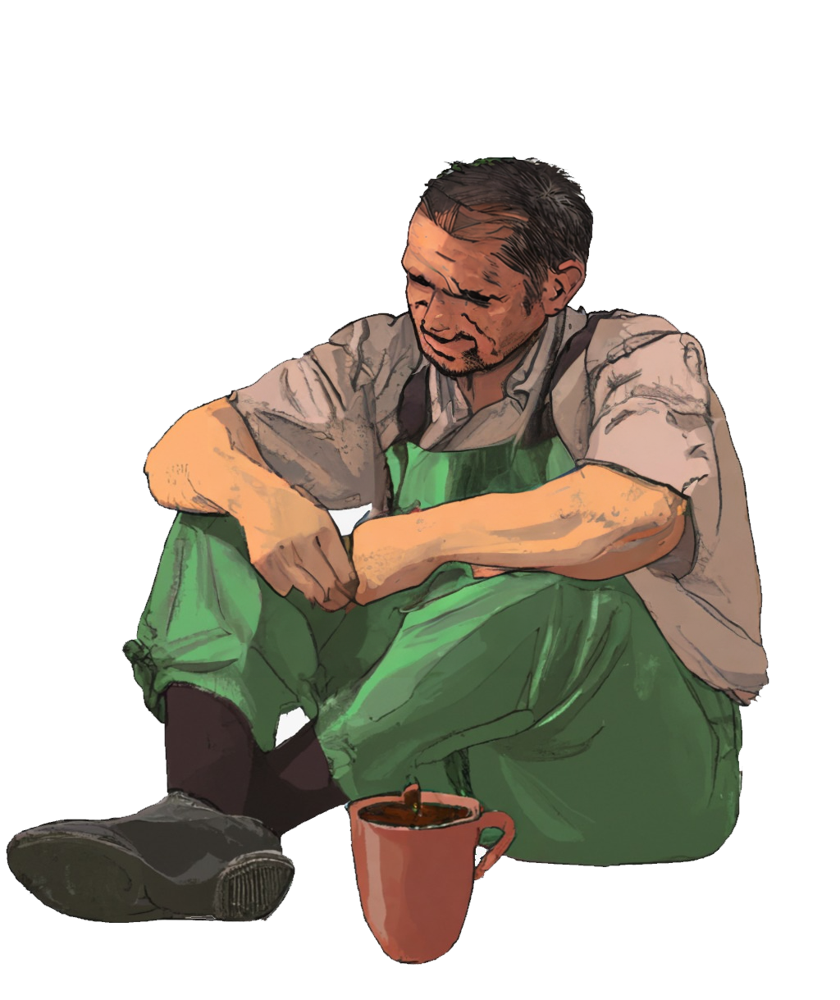

Hi there, how's your coffee?
Have you ever wondered where your coffee comes from?
Let's take a step back.
Click the latte or scroll down
Here's a map of the world, and the countries that produce coffee.
Hover over each country to see how much coffee they produced in 2020. Do you notice a pattern?
The coffee belt passes through some 70 countries, which have tropical climates that provide rich environments that are perfect for growing coffee.
How well do you know your coffee?
Choose the right conditions for your coffee plant!

Warming climate may affect coffee in many ways, including reduced growing area, increased pests, and loss of quality.
While these changes would be inconvenient for coffee drinkers, they could be catastrophic for coffee growers.

Rising temperatures and heavy rain driven by climate change has caused a severe coffee rust outbreak in Central America since 2012.
Unlike the outbreaks in the 1970s and 1980s, which were limited to warm, low altitudes, the new wave of coffee rust spread quickly to high altitudes.
This affected over 55% of the region's coffee farms and left around 350,000 people jobless [3].
a smallholder coffee farmer in Honduras.

"My family has been growing coffee for generations and I have been working on our farm ever since I was a kid. I am deeply connected to the land and the coffee we produce...
However, we have been struggling. Over the past few years, I have noticed significant changes in the climate that are affecting the coffee production and our daily lives."
Climate change in the Northern Triangle
"We have seen temperatures rise above 25 degrees during the day, which has caused the coffee plants to grow slowly, decreasing yield and quality."
Natural disasters in the Northern Triangle
"We experienced extreme droughts in 2014 and 2018. Also, the hurricane in 2020 wiped out most of our coffee plants."
How does all of this link to coffee production?
Between 2012-2015 (shaded in gray), the coffee rust affected over 55% of
the region's
coffee farms and left around 350,000 people
jobless.
Hover over the graph to learn more
"When coffee is not doing well, that's when you see big migrations from Honduras, El Salvador, Guatemala, Nicaragua."
– René León-Gómez, Executive Secretary of PROMECAFE
Migration from the Northern Triangle to the US vs the World
Hover over the graph to learn more
Juan is just one of millions of smallholder coffee farmers that have been affected by climate change, which is causing significant disruptions to agriculture and natural ecosystems.
When people can no longer sustain their livelihoods, they are often forced to make the difficult decision to migrate in search of a more stable and secure future, often risking their lives.
Want to learn more?
Click the bean to find out.
References
DatasetsUSDA coffee data
International Coffee Organization (ICO)
United Nation Population Division
World Food Programme
GADM.org
Image source: Vecteezy
This data visualization was made with data contributed by the United
Nations World Food Programme.
Copyright © All rights reserved by the creators (Eunhae Lee, Austin Stromme, Nishtha Sardana, Muqing Bai)
Github Source